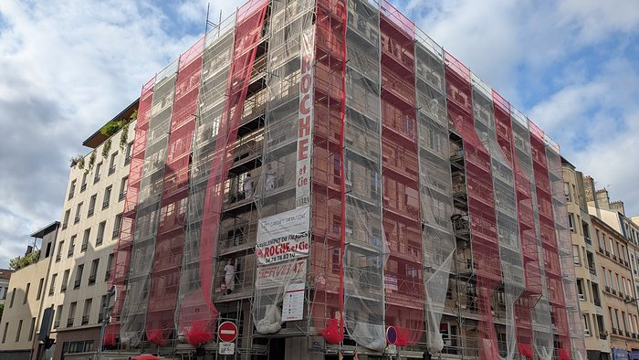
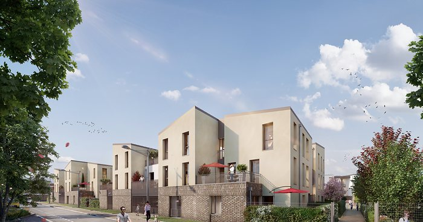
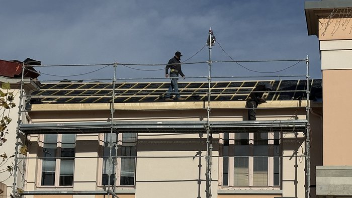
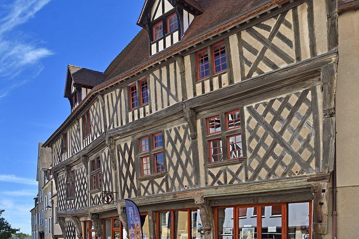
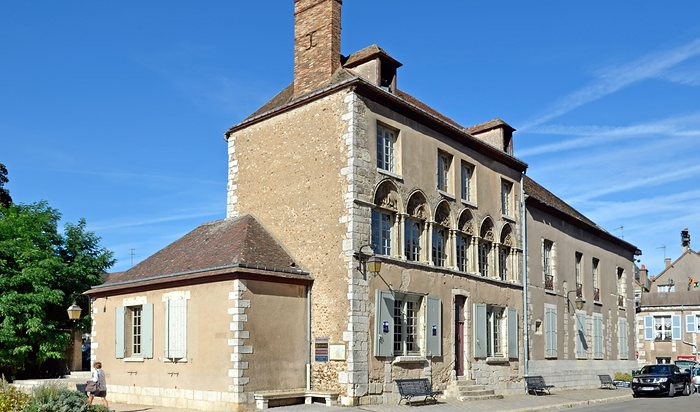
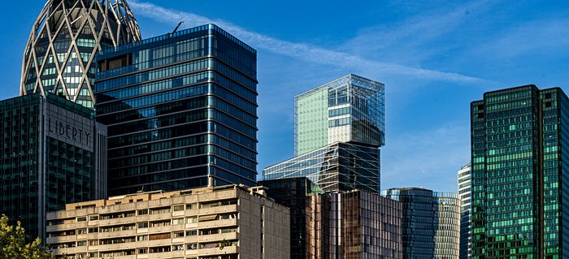

Des solutions adaptées à vos objectifs,
à votre situation et à votre horizon.
Votre objectif
Identifier les dispositifs permettant de maîtriser sa fiscalité.
Investir et construire progressivement un patrimoine.
Anticiper la création de revenus complémentaires.
Préparer et organiser la transmission de son patrimoine.
Fiscalité & investissement
Nos dispositifs

Objectif : réduire son impôt sur le revenu

Objectif : investir dans le locatif avec un avantage fiscal

Objectif : réduire son revenu imposable

Objectif : réduire son impôt en rénovant un bien
Objectif : optimiser sa fiscalité

Objectif : acquérir un patrimoine à prix décoté
Objectif : développer un patrimoine avec des revenus locatifs

ProchainementObjectif : investir dans l'immobilier sans acheter directement un bien
Préparer l'avenir
Retraite, revenus complémentaires, diversification…
Transmettre
Donation, démembrement, organisation du patrimoine…
Échanger sur ma situationNotre approche
votre situation et vos objectifs.
les solutions adaptées
à votre projet.
avantages, contraintes
et horizon.
votre projet immobilier
et patrimonial.
Questions fréquentes
Investissement locatif, réduction d'impôt, retraite, transmission : les questions que l'on nous pose le plus souvent.
Préfecture d'Eure-et-Loir à une heure de Paris en train, Chartres conjugue une demande locative régulière, un centre historique recherché et des prix plus accessibles qu'en Île-de-France.
Selon votre situation : le Denormandie dans l'ancien avec travaux, le Malraux et les monuments historiques pour la restauration du patrimoine, le déficit foncier, le statut LMNP en location meublée, la nue-propriété ou les SCPI. Nous comparons ces solutions avec vous.
Non, il a pris fin le 31 décembre 2024. D'autres solutions existent pour investir dans le neuf ou l'ancien : nous vous présentons celles qui correspondent à votre projet.
En location nue, les travaux d'entretien et de rénovation peuvent créer un déficit, imputable sur votre revenu global dans la limite de 10 700 € par an, le surplus étant reportable sur les revenus fonciers des dix années suivantes.
Donation, démembrement de propriété, SCI : plusieurs outils permettent d'anticiper et d'alléger la transmission. Nous travaillons avec votre notaire et vos conseils pour bâtir une stratégie adaptée.
Nous faisons le point sur votre situation, vos objectifs et votre horizon, puis nous vous proposons des pistes concrètes. Prendre rendez-vous.
Un projet immobilier ou patrimonial ?
Parlons simplement de votre projet.